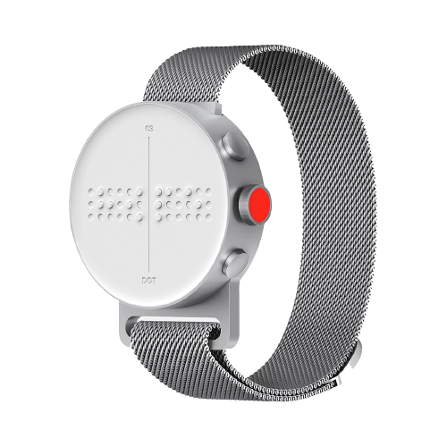
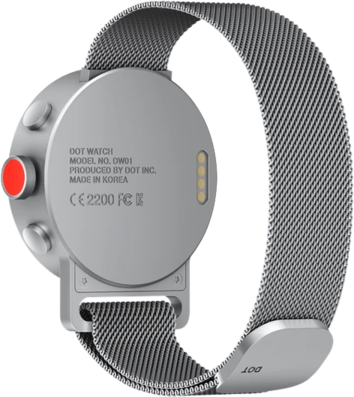
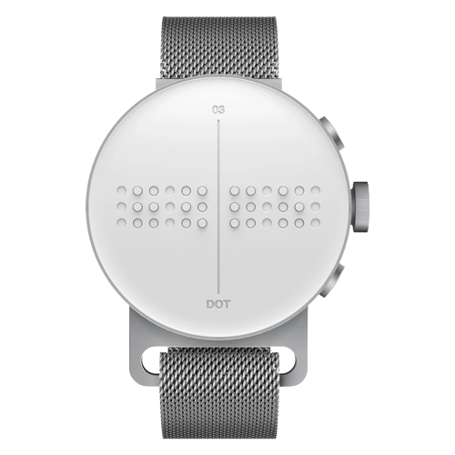
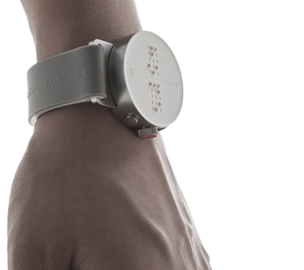

El nuevo reloj inteligente “DotWatch” permite experimentar la forma de
visualizar la hora de una forma completamente innovadora, sin ningún
tipo de sonido y, solamente con el tacto de sus dedos
Este artilugio fue creado con la intención de facilitar las cosas a la gente
invidente a la hora de poder reconocer la hora del día de forma fácil y cómoda.
Permite “palpar” fecha y hora, viene incorporado con despertador, temprizador y cronómetro
para todo tipo de personas.
CONECTIVIDAD

Usted puede percatarse de quién lo está llamando sin siquiera visualizarlo.
Cuando recibe una llamada en su Smartphone, el Dot Watch comienza a
vibrar y muestra el nombre de la persona que está llamando en braile.
Si desea colgar o descolgar usted solo tiene que apretar un solo botón.
DotWatch tambiñen cuenta con sensores de alta calidad, que son capaces
de medir con precisión sus constantes vitales, también msotradas en braile.
MENSAJERÍA

Cada mensaje de texto que recibe en el teléfono
inteligente se traduce instantáneamente a Braille
y se reenvía automáticamente a su Dot Watch.
Puede leerlo de forma rápida y cómoda con los controles
táctiles que vienen incorporados en el dispositivo.
La esfera del reloj y el desplazamiento automático
los mensajes importantes para volver a consultarlos más tarde.
ACCESIBILIDAD

DotWatch es el reloj más accesible para personas
con discapacidad visual que encontrarás en internet y
en el mercado.Nos preocupamos por las personas ciegas
y por ello, hemos conseguido crear esta espectacular
herramienta, que podrá ayudar, y ayuda, en su día a día a miles
de millones de personas por todo el planeta.
Trabajamos para hacer del mundo un lugar mejor.
VIDEO
ESPECIFICACIONES
- DISPLAY : 4 Celdas(6dot) Nueva Version D2
- BLUETOOTH : Bluetooth LE 4.2
- BUTTON : 2 x Botones, 1 x Codificador Switch
- DIMENSION : Cuerpo 43.0 x 12.5 (mm) , 27 (g)
- COLORES : Blanco difuminado & Plata
- PLATAFORMA : Wireless MCU platform
- CPU : 32 bit ARM Cortex M4F
- BATERÍA : Li-Polymer 380mAh
- MATERIAL : Cuerpo (Acero de Aluminio)